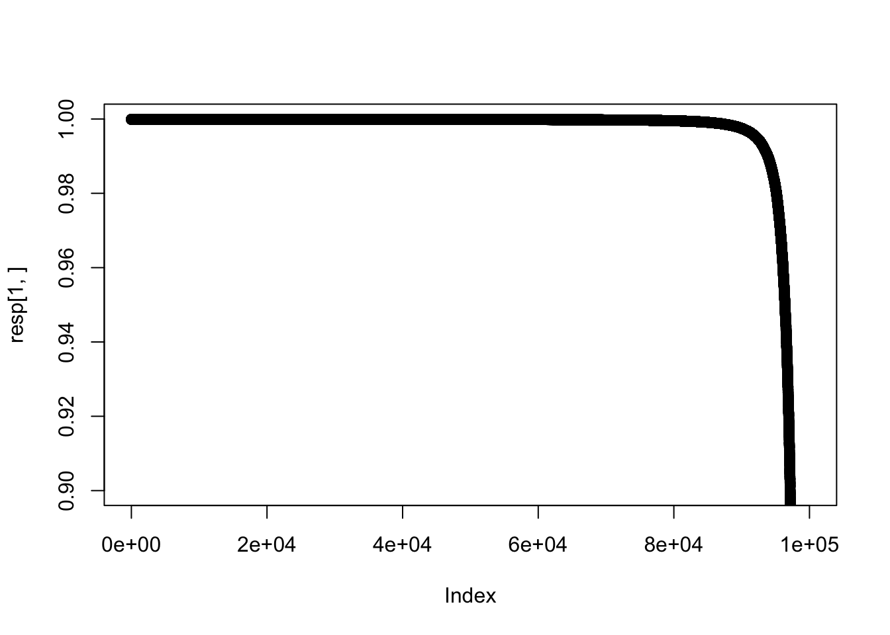
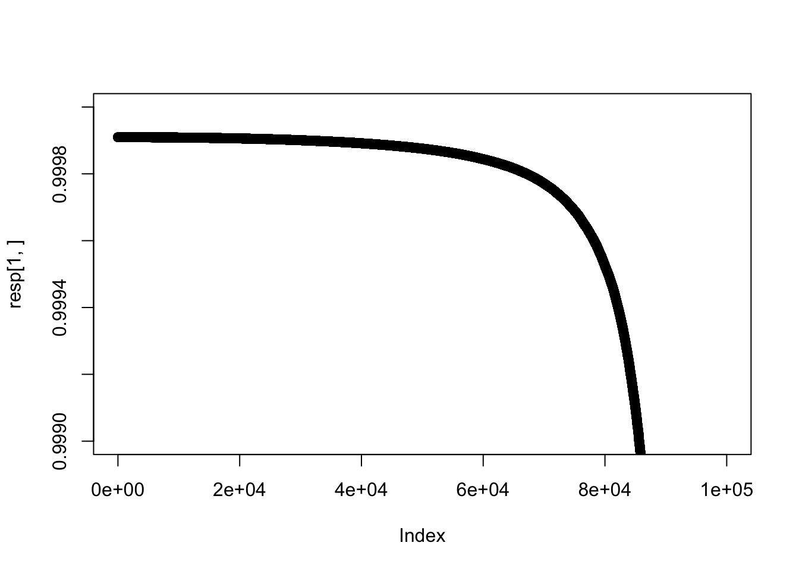

Last updated: 2017-01-11
Code version: e502b63b9936637bedb8474507738480277957d8
The simplest application of ash is to z scores (so shat =1 for all observations).
In this case we can exploit the fact that for similar z the “responsibilities” that are used in the EM algorithm will be similar to one another.
Eg suppose we evaluate the responsibilities for two different observations z1 < z2 and they are very similar. Then they will also be similar for other zs between z1 and z2. In this way we could end up only evaluating responsibilities for a very small fraction of all n z scores. Here we look at how similar the responsibilities are in a simple case.
library(ashr)
set.seed(100)
n=100000
z = rnorm(n,0,2)
#now sort z so that they are in order
z = z[order(abs(z))]
res <- ash(z,1,mixcompdist="normal",outputlevel=4)
lik = res$fit_details$matrix_lik
fitted_g = get_fitted_g(res)
# set up the initial value of pi that we typically use in ash
normalize=function(x){x/sum(x)}
pi = rep(1/n, ncomp(fitted_g))
pi[1]=1
pi = normalize(pi)
resp = apply(t(lik) * pi,2,normalize)The following plots shows that the responsibilities for the first half of the points are very close to one another [and close to (1,0,…0)]
plot(resp[1,],ylim=c(0.9,1))
plot(resp[1,],ylim=c(0.999,1))
So how many are within 1e-5 of each responsibility?
n_within_tol = function(i,tol=1e-5){sum(apply(abs(resp-resp[,i]),2,max)<tol)}
n_within_tol(1)[1] 31280n_within_tol(25000)[1] 38054n_within_tol(50000)[1] 9558n_within_tol(75000)[1] 931n_within_tol(87500)[1] 52n_within_tol(93750)[1] 7This site was created with R Markdown